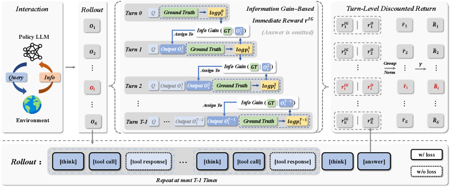
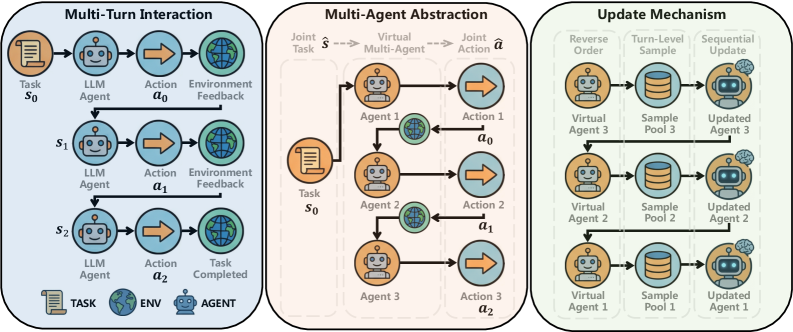
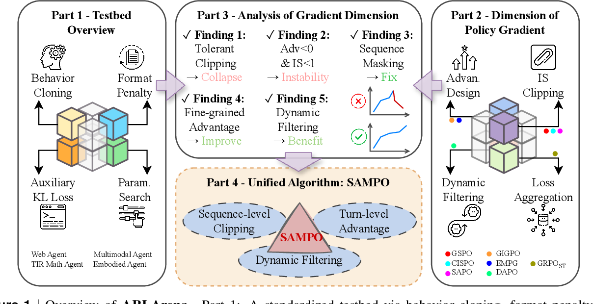

1.2 奖励信号与训练稳定性¶
本节摘要
Agentic 任务中奖励信号面临稀疏、噪声和 Advantage Collapse 三重困境，训练稳定性则受 IS ratio 极端化和多轮不收敛等因素困扰。本节介绍 IGPO（信息增益内在奖励）、CM2（多维度 Checklist 奖励）、SeeUPO（首个多轮 RL 收敛保证）、VCPO（方差控制动态学习率）等核心方案。
奖励信号：从稀疏到自包含¶
问题分析¶
Agentic 任务中，奖励信号面临三重困境：
- 稀疏奖励（16/47 篇提及）: Agent 经过数十步交互后才获得成/败信号，中间步骤无反馈
- 噪声奖励（4 篇）: 使用外部 Reward Model 评估开放式任务时，RM 本身不够准确
- Advantage Collapse（3 篇）: GRPO 的组内归一化在全组获得相同 reward 时，advantage 退化为零，梯度消失
📖 初学者补充：奖励信号的难题
推理 RL（如 DeepSeek-R1）的奖励是「答案是否正确」——这是一个二值信号，清晰且可靠。但 Agent 任务（如「帮我调研某个话题并写一份报告」）的「正确」标准模糊得多，如何给这类任务打分是一个开放问题。
IGPO — 信息增益作为内在奖励¶
论文：IGPO
Paper: Information Gain-based Policy Optimization (arXiv: 2510.14967) | 机构: 阿里巴巴

设计动机: 多轮搜索/交互任务中，最终答案的对/错无法区分每一轮交互的贡献。一次有效的搜索操作和一次无效的搜索操作在 Outcome Reward 下看起来完全一样。IGPO 的核心问题是：能否用模型自身的"信心变化"作为奖励信号，完全不依赖外部 RM？
核心方法: 在每一轮交互 \(t\)，计算模型产生正确答案的概率。Turn-level 奖励定义为该概率相对于上一轮的边际增加量： - 如果本轮搜索让模型对正确答案更有信心 → 正奖励 - 如果本轮搜索没有帮助或造成干扰 → 负奖励
这本质上是一种内在奖励（intrinsic reward），完全从模型自身的 belief update 中推导，不需要任何外部标注或奖励模型。
关键创新: 同时解决了两个问题——(1) 奖励稀疏：每轮都有信号；(2) Advantage Collapse：不同轮次的信息增益天然不同。
面临的挑战: - 仍需要最终答案可验证（需要知道正确答案来计算概率），对完全开放式任务不适用 - 计算每轮条件概率需要额外的 forward pass，增加训练开销 - 模型的"信心"不总是与真实准确性一致（校准问题）
CM2 — 多维度 Checklist 奖励¶
论文：CM2
Paper: Checklist Rewards for Multi-turn Tool-use (arXiv: 2602.12268) | 机构: 字节跳动 | 已开源
设计动机: 单一标量奖励无法区分 Agent 行为的多个维度。一个 Agent 可能正确选择了工具但参数传错了，也可能工具选错了但格式完美——标量奖励无法捕捉这种差异。
核心方法: 设计 7 个细粒度评估组件，为每轮交互提供多维度密集反馈。Checklist 涵盖工具选择准确性、参数正确性、输出格式、任务进展等维度，每个维度独立评分。
面临的挑战: - Checklist 的设计高度任务特定，换一个任务域就需要重新设计评估维度 - 维度之间的权重平衡缺乏理论指导 - 评估维度越多，标注/自动评估的成本越高
其他方案概览¶
| 算法 | arXiv | 核心思路 | 适用场景 |
|---|---|---|---|
| EDGE-GRPO | 2507.21848 | 引入熵项打破组内相同 reward 导致的 advantage=0 | Advantage Collapse |
| ReGFT | 2603.01223 | 提供部分人工参考解法作为 hint，引导模型生成它原本无法独立生成的正确轨迹 | 困难问题冷启动（本质是 SFT 而非 RL） |
| PF-PPO | 2409.06957 | 基于 RM 不确定性过滤不可靠样本，只用高置信度奖励训练 | 噪声 RM 场景 |
| ZeroSearch | 2505.04588 | 用 LLM 模拟搜索引擎，避免真实 API 的噪声文档 | 搜索增强任务 |
| DARS | 2508.13755 | 多阶段 rollout 采样，为低准确度困难问题动态分配更多 rollouts | 困难样本欠采样 |
训练稳定性：从经验到收敛保证¶
问题分析¶
Agentic 任务的长序列和多轮交互引发严重的训练不稳定：
- IS ratio 极端化（6 篇）: 长序列中，token-level importance sampling 权重容易溢出，导致更新失控
- Outlier tokens（4 篇）: 个别 token 的极端奖励主导整个更新方向
- Value 估计偏差（3 篇）: Value network 在长 CoT 中不准确，导致 advantage 错误
- 多轮 RL 不收敛: 传统算法（PPO、GRPO）在多轮任务上缺乏收敛保证
📖 初学者补充：Importance Sampling
Importance Sampling (IS) ratio 是 \(\pi_\theta(a|s)/\pi_{\text{old}}(a|s)\)，衡量新旧策略的差异。在长序列中，每个 token 的 IS ratio 相乘后可能变得极大或极小，这就是为什么长序列 RL 比短序列难得多。
SeeUPO — 首个多轮 RL 收敛保证¶
论文：SeeUPO
Paper: Sequence-Level Sequential Update with Convergence Guarantee (arXiv: 2602.06554) | 机构: 阿里巴巴 | ICLR 2026

设计动机: SeeUPO 的出发点是一个理论层面的发现——它证明了传统算法（PPO、GRPO）在 multi-turn 任务上存在一个根本性的矛盾：无 Critic（GRAE）和训练收敛不可得兼。
具体来说： - Value-Free 算法（GRPO 类）无法区分多轮中各轮的贡献 → 梯度有偏 → 不收敛 - 即使用 Critic（PPO 类），在多轮中 Value 估计误差累积也会导致偏差
这意味着直接把单轮 RL 算法搬到多轮场景，理论上就不对。
核心方法: SeeUPO 将 multi-turn 交互重新建模为多个 Agent 的顺序决策问题——第 1 轮的行为由 Agent 1 决定，第 2 轮由 Agent 2 决定... 然后通过 backward induction（反向逐轮更新策略），从最后一轮倒推回第一轮，保证单调改进和全局最优收敛。
直觉上，这类似于博弈论中的逆向归纳：先想清楚最后一步应该怎么做，再基于此推导倒数第二步... 直到第一步。
关键成果: AppWorld +43.3%, BFCL +24.1%。这是首个理论上证明 multi-turn RL 可收敛到全局最优的算法。
面临的挑战: - Backward induction 需要逐轮更新，训练开销随轮次线性增长 - "多 Agent 建模"假设各轮相对独立，但实际上各轮之间有复杂依赖 - 收敛保证依赖于采样质量，实际中有限采样可能偏离理论条件 - 目前仅在对话式任务上验证，对超长步骤的 Agent 任务（如软件工程）的适用性未知
ARLArena/SAMPO — 系统性稳定性分析框架¶
论文：ARLArena/SAMPO
Paper: Unified Framework for Stable Agentic RL (arXiv: 2602.21534) | 机构: UCLA

设计动机: Agentic RL 训练频繁崩溃，但社区对不稳定性的来源缺乏系统性理解。不同论文各自修补一个问题（IS clipping、advantage 归一化、loss 聚合...），但没有人从全局视角分析：哪些因素真正导致崩溃，哪些改进是关键的，哪些是无关紧要的？
核心方法: ARLArena 将 Policy Gradient 算法分解为四个正交维度进行系统测试：
- IS Clipping: 如何限制 importance sampling 权重（token-level vs sequence-level，裁剪范围）
- Dynamic Filtering: 如何过滤极端样本（基于 reward、advantage、trajectory 质量）
- Advantage Assignment: 如何计算优势函数（token-level vs step-level vs trajectory-level）
- Loss Aggregation: 如何聚合多个 token/step 的 loss
通过控制变量实验，ARLArena 发现了训练崩溃的根本原因：负优势 + 宽松 IS 裁剪轨迹的累积。具体来说，当一条轨迹获得负 advantage 但 IS ratio 因裁剪范围过宽没被有效限制时，这条轨迹会产生过大的负梯度，多条这样的轨迹累积就导致崩溃。
基于分析，ARLArena 提出 SAMPO（Stable Agentic Policy Optimization）配置，在四个维度上选择最稳定的组合。
面临的挑战: - 框架是描述性的（告诉你什么组合稳定），不是规范性的（无法预测新场景的最优配置） - 最优配置可能随模型规模、任务类型变化 - 四个维度的交互效应复杂，全组合搜索成本高
VCPO — 方差控制的动态学习率¶
论文：VCPO
Paper: Variance-Controlled Off-Policy RL (arXiv: 2602.17616) | 机构: MIT | 已开源 | ICLR 2026
设计动机: 异步训练（多个 actor 产生数据，一个 learner 消费数据）在工业界是标配，但 off-policy 数据的 IS ratio 分布不稳定。VCPO 的核心洞察是：与其事后裁剪极端 IS ratio，不如在更新时就根据"有效样本量"动态调整学习步长。
核心方法: - ESS（Effective Sample Size）动态学习率: 用 IS 权重计算当前 batch 的有效样本量，有效样本少时（off-policy 程度高）自动降低学习率 - OPOB（Optimal Baseline）: 闭式最小方差基线，理论上最优的 baseline 选择
面临的挑战: - ESS 估计本身依赖 IS 权重的准确性，在极端 off-policy 场景下可能不可靠 - 动态学习率可能导致训练速度波动，需要平衡稳定性和效率
其他方案概览¶
| 算法 | arXiv | 核心思路 | 关键贡献 |
|---|---|---|---|
| ProRL | 2505.24864 | 周期性重置 reference policy，防止 IS ratio 偏离过远 | 证明延长 RL 可突破 base model 推理边界 |
| GMPO | 2507.20673 | Token reward 的几何平均替代算术平均，对 outlier 不敏感 | 微软，已开源 |
| OTB | 2602.07078 | Token 级最优基线，用 forward-pass 概率近似梯度范数 | 计算效率与稳定性兼顾 |
| Dr. MAS | 2602.08847 | Agent-wise 归一化，解决多智能体梯度干扰 | 多 Agent 训练理论证明 |